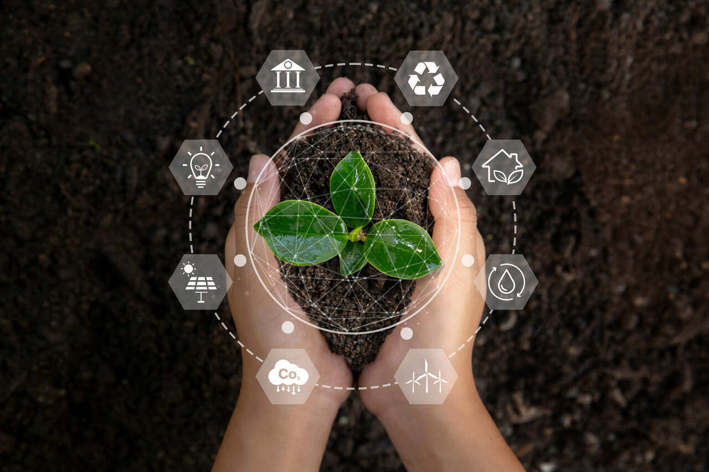

A sustentabilidade é um conceito que se refere à utilização consciente dos recursos naturais, de forma a garantir que as gerações futuras tenham acesso a esses recursos. É fundamental adotar práticas que promovam a conservação ambiental para proteger o planeta e a biodiversidade.
A adoção de práticas sustentáveis ajuda a minimizar os impactos negativos das atividades humanas no meio ambiente. Isso inclui a redução do consumo de recursos, a reciclagem de materiais, a preservação dos ecossistemas e a promoção de uma economia mais verde.

Imagem: Práticas sustentáveis| Prática | Descrição | Benefícios |
|---|---|---|
| Reciclagem | Processo de transformar materiais para reutilização | Reduz o desperdício e economiza recursos |
| Agricultura Orgânica | Cultivo de alimentos sem pesticidas e fertilizantes sintéticos | Melhora a saúde do solo e da biodiversidade |
| Uso de Energias Renováveis | Utilização de fontes de energia como solar e eólica | Diminui a dependência de combustíveis fósseis |
| Impacto | Causa | Consequências |
|---|---|---|
| Desmatamento | expansão agrícola e urbana | Perda de biodiversidade e alterações climáticas |
| Poluição do Ar | Emissões de indústrias e veículos | Problemas de saúde e degradação ambiental |
| Mudanças climáticas | Emissão de gases de efeito estufa | Aumento da temperatura global e eventos climáticos extremos |
Link para mais informações: Para saber mais sobre sustentabilidade, visite Instituto Ambiental.
Adotar práticas sustentáveis é fundamental para a conservação do meio ambiente e para garantir um futuro melhor para as próximas gerações. Cada pequena ação conta e pode fazer a diferença!